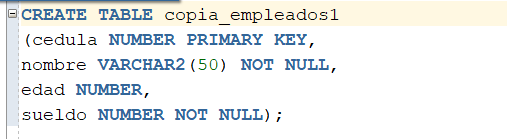
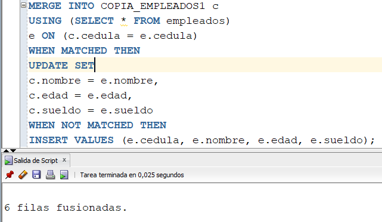
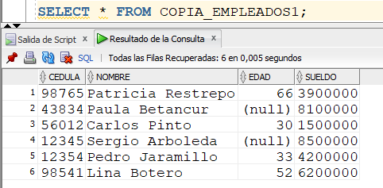
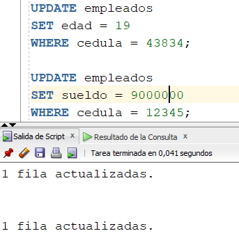
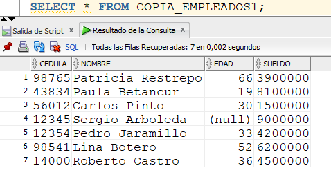
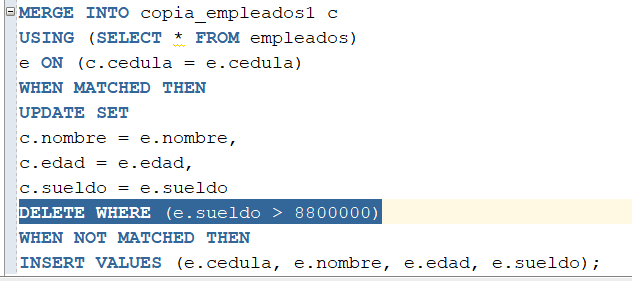
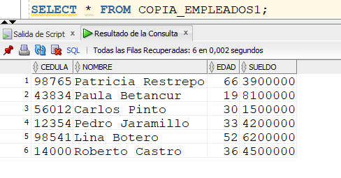

A continuación, abordemos la instrucción MERGE que maneja Oracle. La palabra MERGE significa mezclar. Hacer un MERGE significa “cruzar” los datos de dos tablas. En este cruce hay una tabla origen y una tabla destino. El MERGE recorre la tabla origen, tupla por tupla, y verifica si existe en la tabla destino. Si en la tabla destino, la tupla no existe, se inserta; si en la tabla destino la tupla existe, se actualiza. Y hay una cláusula para borrar registros de la tabla destino.
Vamos a desarrollar el concepto con un ejercicio. Creemos la siguiente tabla.

Vamos a hacer un MERGE donde la tabla origen es EMPLEADO y la tabla destino es COPIA_EMPLEADOS1.

Los 6 empleados que hay grabados en EMPLEADOS quedaron grabados en COPIA_EMPLEADOS1. Como la tabla destino estaba vacía, lo que se hizo fueron 6 INSERTS.

A continuación, miremos cómo funciona el MERGE cuando ejecuta, al mismo tiempo, el UPDATE y el INSERT. Insertemos un nuevo empleado en la tabla EMPLEADOS.
Luego actualicemos algunos datos de empleados ya existentes en la tabla:

Luego, volvamos a ejecutar el MERGE anterior, y miremos el contenido de la tabla COPIA_EMPLEADOS1. Nótese que en COPIA_EMPLEADOS ya aparece el empleado recién insertado (Roberto Castro) y aparecen actualizados la edad y el sueldo de los empleados 43834 y 12345 respectivamente.
En esta segunda ejecución del MERGE se puede comprobar la ejecución del UPDATE y del INSERT al mismo tiempo.

La instrucción MERGE de Oracle también tiene forma de hacer un DELETE. Miremos como funciona. Consideremos el mismo MERGE anterior, pero con la instrucción DELETE dentro de él.

Nótese que en COPIA_EMPLEADOS se borró al empleado con cedula 12345, el cual tenía un sueldo mayor a 8800000.

IMPORTANTE: Este DELETE funciona solamente para los registros actualizados con el UPDATE, no para todos los registros existentes. Verificarlo.
Video: